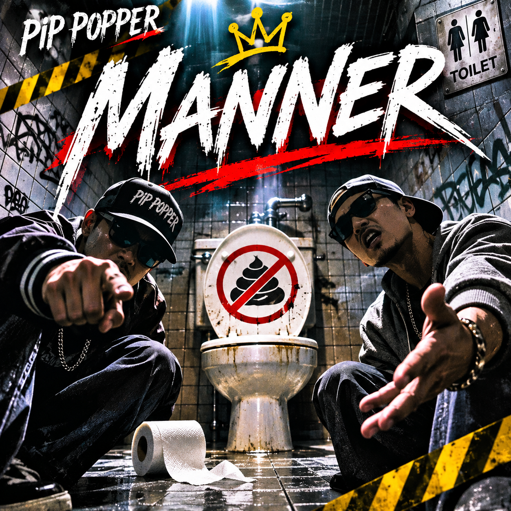

Manner
PIP POPPER
楽曲を聴く
AIの感想
公衆トイレやプールでのマナー違反に対する怒りを、容赦のない言葉と畳みかけるラップで爆発させた一曲。下品な題材を真正面から扱いながら、韻を踏み、言葉遊びを重ね、最後まで妙な勢いで突っ走る。ふざけているようで、訴えていることは至って真面目。「自分の後始末くらい自分でしろ」という、実に正論なマナー啓発ソング。
歌詞
ふてぇーの置いてく奴、排泄物排除 公衆便所の便所で残したまま便器洗浄 しねぇで残っている現状 流さねぇじゃなく流れねぇ なかなかしぶてぇ排泄物 犯人は便秘中 匂い分泌 くせえやつ 足りねえ水圧 放置プレイ みんなに謝れ 自分の分は自分で葬れ Kill You デカイなら途中で切れよ 掃除のおじさん恩に着るよ やばくなったぜこの短期間 俺の三半規管プラス鼻が利かん オナラにおい残してさよなら 最低のマナー守れんのなら その勢いで、こっちおいで ウンコを見たみんなの目の前で 手を挙げて言って欲しいです 「Oh! Yes私のうんこです」 自己申告する勇気あるなら、 まあ、許そう おまえの放置グソ でも、早く治せその放置癖 じゃないと学校のトイレが超くせぇ～ くせぇくせぇくせぇくせぇクソ タンクの水がたんねぇぞ うぜぇうぜぇうぜぇうぜぇ嘘 犯人は誰だ手上げろ！ くせぇくせぇくせぇくせぇクソ ちゃんと流れたか確認しろ！ マナー違反の悪い見本だ 今度したら訴えるぞ 小便飛ばしたオマエほらhands up! めんどくさがらずに上げろ便座! する前に紙を要check it out! 使い切った奴が補充するべきだ 俺が許せんのは、そこのガキだ こそこそ隠れてるそこの脇だ プールの中でブリブリブリブリ んなとこで泳ぐの無理無理無理無理 予想外に浮いてくるプカプカ 見るだけでみんながムカムカ その開放感には同感だけど、 それをみんなに見られちゃいかん そのまま不法投棄したままどっか 行ってしまった ちょっと待った プールの水飲んでしまった この精神的苦痛！これは普通 慰謝料取れるでしょ？どうなの？ 行列の出来る法律相談所！ 男女の問題は感情 ウンコの問題は便所で起こる 被害者は怒る 何処に行こう？ 俺たちが怒りをぶつけるとこ！ しっかりしとけ 親のしつけ 根に持つぞ俺はかなりしつけぇ！ くせぇくせぇくせぇくせぇクソ タンクの水がたんねぇぞ うぜぇうぜぇうぜぇうぜぇ嘘 犯人は誰だ手上げろ！ くせぇくせぇくせぇくせぇクソ ちゃんと流れたか確認しろ！ マナー違反の悪い見本だ 今度したら訴えるぞ